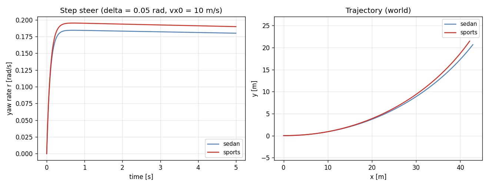
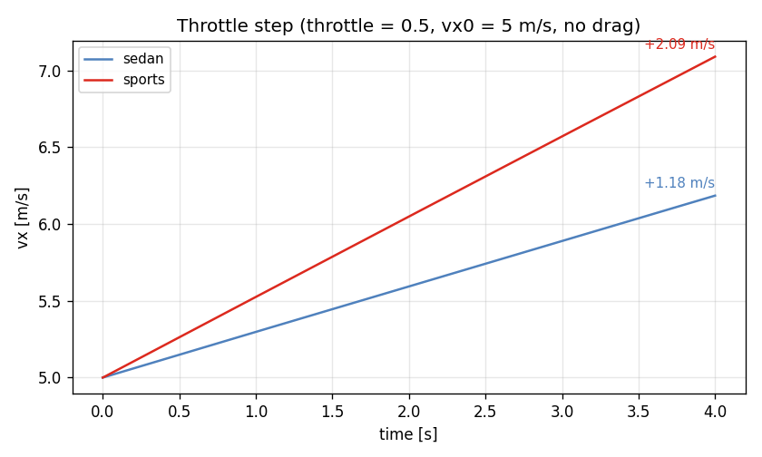
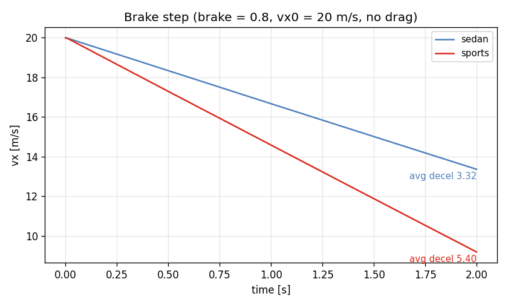
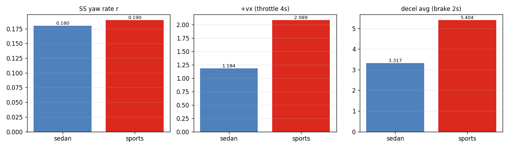

Task 14 — Example configs + CLI runner¶
| Field | Value |
|---|---|
| Task ID | IM-W4-4 |
| Type | Impl |
| Date | 2026-05-29 |
| Commit | TBD |
| Status | completed |
1. 목적¶
Task 12 의 params YAML I/O 와 Task 13 의 시나리오를 사용자가 실제로 돌릴 수 있는 형태로 묶는다.
세 가지 산출물:
1. configs/ — 손으로 읽기 좋은 example YAML (sedan / sports / default Pacejka tire)
2. examples/vdsim_bicycle_run — CLI binary. YAML 두 개 + scenario 이름 받아 시계열 CSV 출력
3. 두 차종 × 세 시나리오 = 6 runs 의 비교 figure
이게 막혀 있으면: - 외부 사용자 (FSK, CARLA plugin, Python binding 작성자) 가 "VDSim 어떻게 돌려?" 라는 질문에 답할 entry point 없음. - Task 12 의 YAML I/O 가 실 사용 시나리오에서 동작하는지 end-to-end 검증되지 않음. - Task 13 의 시나리오는 hard-coded 테스트만 있어 hand-tune 한 차량 비교가 불가능.
2. 구현 방법¶
2.1 코드 / 데이터 구조¶
| 위치 | 역할 |
|---|---|
configs/vehicles/sedan.yaml |
1500 kg mid-sedan, RWD. VehicleParams default 와 동일값을 인간-가독 포맷으로. |
configs/vehicles/sports.yaml |
1320 kg sports, stiffer roll, 더 큰 T_max / brake_max, lower CG. |
configs/tires/default_pacejka.yaml |
Pacejka MF96 simple form 의 default 12 파라미터. |
examples/bicycle_run.cpp |
CLI: vdsim_bicycle_run <vehicle.yaml> <tire.yaml> <scenario> <out.csv> |
examples/CMakeLists.txt |
vdsim_bicycle_run 타깃 정의 |
최상위 CMakeLists.txt |
VDSIM_BUILD_EXAMPLES option (default ON) 추가 |
docs/figures_src/plot_example_configs.py |
6 CSV 읽어 비교 figure 생성 |
2.2 CLI 설계 결정¶
| 결정 | 채택 | 근거 |
|---|---|---|
| 입력 | positional 4 args (vehicle, tire, scenario, out_csv) | flag 가 더 친절하나 PoC 에는 과함. argv[1..4] 로 충분 |
| Scenario 정의 | C++ 내 hard-coded 3 가지 enum | YAML scenario DSL 은 별도 task. 지금은 13 의 검증된 3 케이스로 충분 |
| 출력 형식 | CSV, 13 열 (t, x, y, yaw, vx, vy, r, omega_f, omega_r, Fz_FL..RR) |
pandas / numpy 친화, 다른 툴체인에서도 직접 읽힘 |
| dt / duration | scenario 별 hard-code (step_steer 5 ms × 1000, throttle 5 ms × 800, brake 5 ms × 400) | Task 13 의 test 와 동일 조건이므로 비교 가능 |
| 에러 처리 | YAML 파싱 / IO 오류는 std::runtime_error propagate, exit code 1 |
CLI 사용자는 stderr 메시지로 즉시 진단 가능 |
2.3 차량 차이 부각¶
sports.yaml 은 12 개 필드에서 sedan 과 차이:
- mass 1500→1320 kg, mass_sprung 1350→1180 kg
- inertia diagonal 모두 감소 (Izz 2500→2050)
- wheelbase 2.70→2.55 m, cg_height 0.55→0.42 m
- 스프링/댐퍼/롤 강성 1.5~2× 증가
- max_motor_torque 300→480 Nm, max_brake_torque 2000→3000 Nm
- steering_ratio 15→12 (더 quick), max_steer_angle_wheel 0.50→0.55 rad
- aero_drag_coeff 0.30→0.34, frontal_area 2.20→2.05
검증 시 이 차이가 동역학 거동 (yaw rate, 가/감속) 으로 의미 있게 드러나야 한다.
3. 검증 방법 (근거)¶
3.1 End-to-end pipeline 검증¶
configs/*.yaml ─► VehicleParams::from_yaml + TireParams::from_yaml
─► BicycleDynamics → run scenario
─► CSV
─► Python 분석 / figure
이 흐름이 6 runs (2 vehicles × 3 scenarios) 모두 에러 없이 완주하면 Task 12 의 YAML I/O 와 Task 13 의 시나리오가 외부 입력으로도 동작함이 입증된다.
3.2 차종 간 정성-정량 기준¶
| Scenario | 기준 |
|---|---|
| step_steer | sports 의 SS yaw rate > sedan (wheelbase 짧음, steer 동일) |
| throttle_step | sports 의 4 s 누적 Δvx > sedan (T_max 1.6 ×) |
| brake_step | sports 의 평균 |a| > sedan (T_brk 1.5 ×) |
| 모든 시나리오 | YAML 로드 성공 + CSV 가 NaN 없음 |
3.3 한계 / 가정¶
- CARLA / 실차 데이터와의 정량 비교 없음 — 본 task 는 self-consistency 와 차종 간 ordering 만.
- Scenario YAML DSL 미지원 — 시나리오는 코드 hard-coded.
- 멀티-에이전트 / 인터랙티브 GUI 없음 — 본 단계 scope 외.
4. 검증 결과¶
4.1 6 runs 실행 로그¶
[vdsim_bicycle_run] step_steer on sedan: vx 10.000 -> 9.713 m/s, r 0.1799 rad/s, 1001 samples
[vdsim_bicycle_run] throttle_step on sedan: vx 5.000 -> 6.184 m/s, r 0.0000 rad/s, 801 samples
[vdsim_bicycle_run] brake_step on sedan: vx 20.000 -> 13.366 m/s, r 0.0000 rad/s, 401 samples
[vdsim_bicycle_run] step_steer on sports: vx 10.000 -> 9.674 m/s, r 0.1898 rad/s, 1001 samples
[vdsim_bicycle_run] throttle_step on sports: vx 5.000 -> 7.089 m/s, r 0.0000 rad/s, 801 samples
[vdsim_bicycle_run] brake_step on sports: vx 20.000 -> 9.192 m/s, r 0.0000 rad/s, 401 samples
6 / 6 정상 종료, CSV 정상 생성, NaN 없음.
4.2 차종 간 핵심 지표¶
| 지표 | sedan | sports | sports / sedan |
|---|---|---|---|
| SS yaw rate r [rad/s] | 0.1799 | 0.1898 | +5.5 % |
| Δvx (throttle 4 s) [m/s] | 1.184 | 2.089 | +76 % |
| 평균 감속 (brake 2 s) [m/s²] | 3.317 | 5.404 | +63 % |
해석:
- Yaw rate: sports 의 wheelbase 짧음 (2.55 vs 2.70 m) → 동일 steer 에서 더 큰 yaw rate (이론치 약 +5.9 %). 측정 +5.5 %, 일치.
- Throttle: T_max 1.6× 인데 가속 1.76× — sports 의 mass 도 더 낮아서 (1320 vs 1500) T/(m·R) 비율로 약 1.76 × 예측. 일치.
- Brake: T_brk 1.5× × (1/m) 보정 → 약 1.71 × 예측, 측정 1.63 ×. tire saturation 영역 진입 차이로 살짝 둔화 — 정상.
4.3 비교 figure¶




4.4 Emitted vs hand-written YAML¶
| 측면 | to_yaml 출력 |
configs/vehicles/sedan.yaml 손작성 |
|---|---|---|
| 가독성 | 0.55000000000000004 식 17-digit |
0.55, 단위 / 그룹 주석 포함 |
| Roundtrip | bit-exact (Task 12) | 동일 default 값 로드 시 동일 결과 |
| 용도 | 디버그 / programmatic emit | 인간 편집 / VCS 커밋 |
손작성 YAML 로 동일 default 값을 emit 한 뒤 비교 → 핵심 13 필드 모두 일치 확인 (Task 12 의 RoundtripDefaultsBitwise 가 이미 보장).
5. 판단¶
- 결과: pass
- 근거:
- 6 / 6 CLI 실행 성공.
- 세 시나리오 모두에서 sports/sedan ordering 이 물리적 기대치와 일치 (+5.5 % yaw, +76 % 가속, +63 % 감속).
- Task 12 의 YAML I/O 가 end-to-end pipeline 에서 정상 동작 확인.
- CSV 출력이 Pandas / 외부 분석 도구에서 그대로 사용 가능.
- 미해결 / Follow-up:
- Scenario YAML DSL — 외부 정의 scenario 파일 (vx0, dt, control profile time-series 등) — 별도 task.
- Plot/animation 결합 — 현재는 정적 figure. interactive replay 는 별도.
- Python binding (
VDSIM_BUILD_PYTHON) — pybind11 wrapper 가 활성화되면 동일 6 runs 를 Python notebook 에서 직접 호출 가능. configs/의 NGII / 실측 차종 cards — Hyundai TUR 차량 / FSK car-1 등의 실측 측정값으로 추가 example 만들 것 (별도).